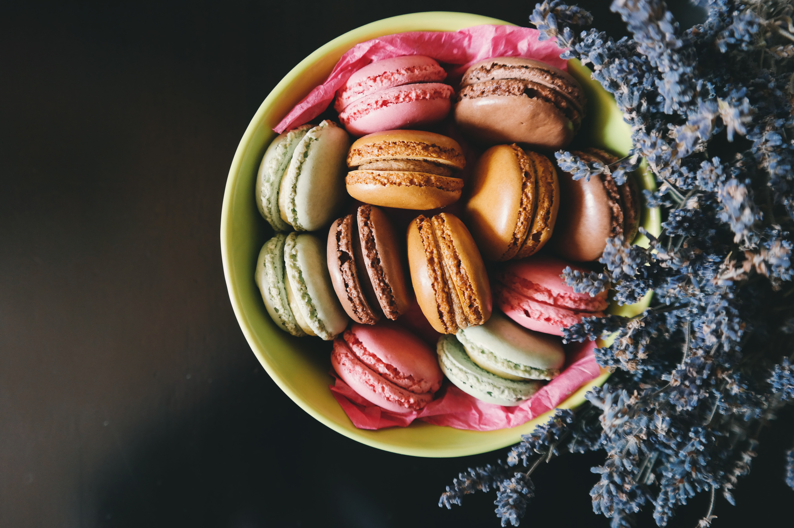
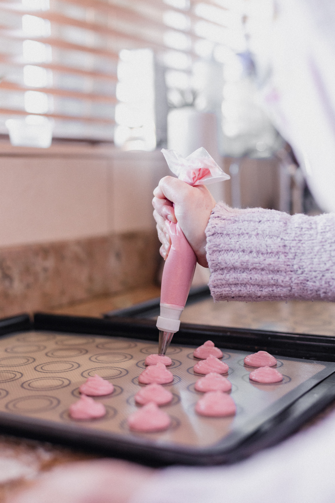
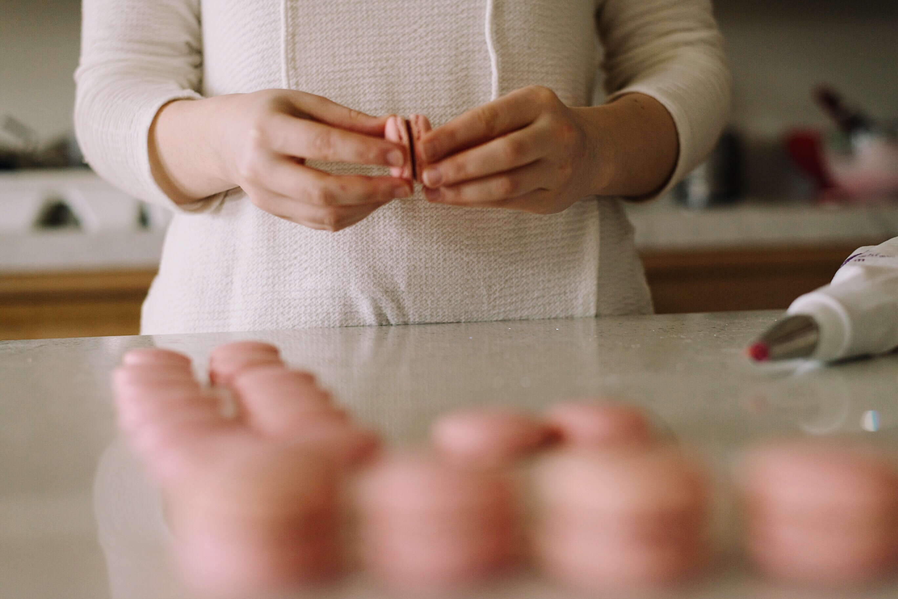

MAKARON TARİFİ

Malzemeler
- 80 gr yumurta akı
- 160 gr toz şeker
- 140 gr badem unu
- 50 gr pudra şekeri
- Bir tutam tuz
Çikolatalı Ganaj Dolgusu için:
- 100 gr Krema
- 100 gr Bitter Kuvertür Çikolata
Nasıl Yapılır?

Yumurta akını çırpma kabına alalım, çırpmaya başladıktan sonra yavaş yavaş toz şekeri ekleyelim ve katı bir kıvam alana kadar hızlı bir şekilde çırpalım.
Karışımın üzerine pudra şekeri, bir tutam tuz ve badem ununu eleyerek ekleyelim ve yavaşça katlayarak karıştıralım.
Şimdi karışım içerisine gıda Boyalarından istediğiniz rengi seçip ekleyebilirsiniz.
Karışımı düz ağızlı duy takılan Krema Torbası içerisine alalım ve önceden nişastaladığımız pişirme Kağıdına makaronları sıkalım.
Üzeri düz hale gelene kadar tepsiyi tezgâha vuralım ve üstlerinin kuruması için bekletelim.
Makarona dokunduğumuzda elimize bulaşmıyorsa ve kabuklanmayı hissediyorsak olmuş demektir.
140° önceden ısıtılmış fırında 15 dk. pişiriyoruz ve soğumaya bırakıyoruz.
Çikolatalı Granaj Dolgusunun Hazırlanışı
Kremamızı kaynayana kadar ısıtıyoruz ve çikolatanın üzerine döküyoruz.
Biraz beklettikten sonra çikolata tamamen eriyene kadar karıştırıyoruz.
3 dk. karıştırıyoruz ve üzerini streçleyip soğuyana kadar buzdolabında bekletiyoruz.
Soğuyan kremayı yumuşaması için 1 dakikadan az bir süre karıştırıyoruz ve Krema Torbasına alıyoruz.
Birleştirme

Soğuyan makaronların arasına ganajını sıkıyoruz ve üzerini başka bir makaronla kapatıyoruz.
Dolapta biraz dinlendirdikten sonra servis ediyoruz.
Afiyet Olsun 🧡